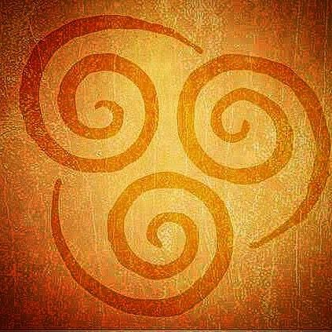
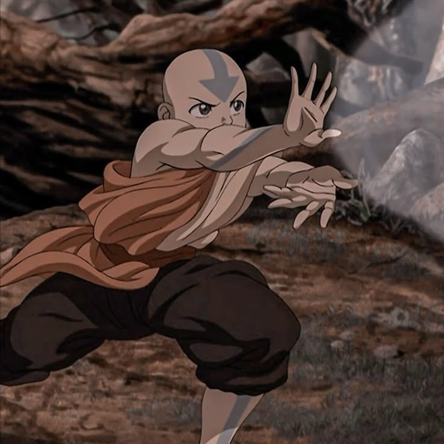
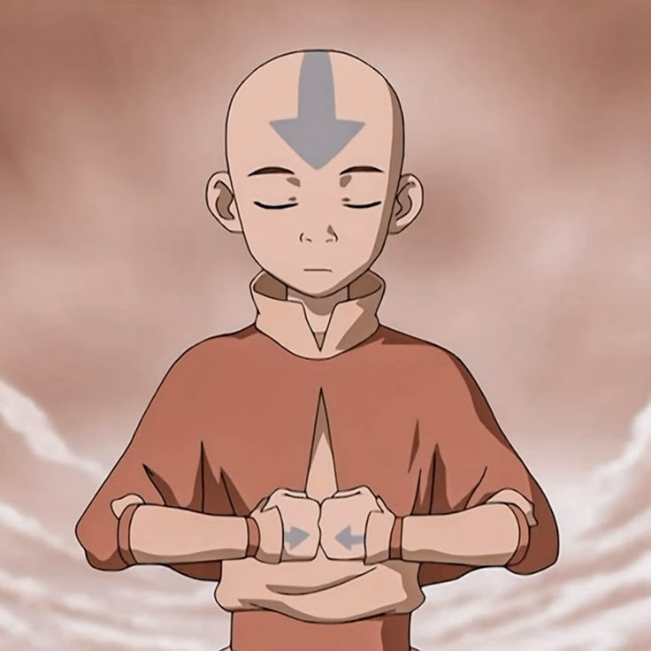
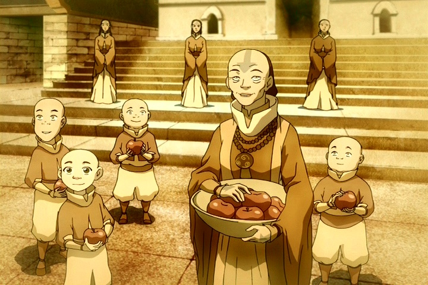

Ar
O ar é um dos quatro elementos do mundo Avatar. Seus dominadores utilizam movimentos rápidos, leves e precisos para controlar o vento e criar diferentes técnicas de combate e defesa.
Conheça o ar ↓
O poder do ar
A dominação de ar permite que seus usuários controlem o vento e criem correntes de ar utilizando movimentos do próprio corpo.
Os dobradores de ar costumam utilizar velocidade, agilidade e movimentos circulares para evitar ataques e surpreender seus adversários.
O ar representa liberdade e movimento. Por isso, seus dominadores aprendem a ser flexíveis, rápidos e capazes de se adaptar às situações.


Aang
Aang é o último dominador de ar de sua época e também o Avatar. Desde pequeno, aprendeu os ensinamentos dos Nômades do Ar e desenvolveu grande habilidade com o elemento.
🌬️ Dominação
Aang utiliza o ar para criar rajadas, correntes de vento e movimentos rápidos.
🌀 Mobilidade
A dominação de ar permite que Aang se movimente com muita velocidade e agilidade.
🪁 Planador
Aang utiliza seu planador junto com a dominação de ar para se movimentar pelo céu.
Técnicas do Ar
A dominação de ar possui diferentes técnicas que podem ser utilizadas para ataque, defesa, movimento e outras situações.
Redemoinho
Criação de correntes circulares de ar para defesa, ataque e movimentação.
Voo
Utilização do ar para auxiliar na movimentação e deslocamento pelo ambiente.
Projeção Espiritual
Uma técnica que permite projetar o espírito e viajar espiritualmente para outros lugares.
Vácuo
Técnicas que utilizam o controle do ar para retirar o ar dos pumões do seu inimigo.
Som
Técnica que utiliza o controle do ar para potencializar a voz podendo estourar timpanos.

A liberdade do ar
O ar representa liberdade, movimento e adaptação. Seus dominadores aprendem a não permanecer presos a uma única maneira de pensar ou agir.
Em um combate, um dobrador de ar pode utilizar sua velocidade e agilidade para evitar ataques e encontrar novas maneiras de enfrentar seus adversários.
Assim como o vento muda de direção, seus dominadores precisam aprender a se adaptar aos desafios encontrados pelo caminho.
Liberdade, movimento e equilíbrio
O ar é muito mais do que apenas um elemento. Ele representa liberdade, velocidade, flexibilidade e capacidade de adaptação.
A história de Aang mostra como os ensinamentos dos Nômades do Ar podem ajudar alguém a enfrentar grandes responsabilidades sem abandonar seus próprios valores.
Seja livre como o vento.
VOLTAR AO INÍCIO →